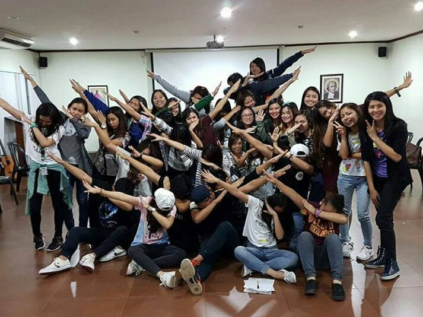
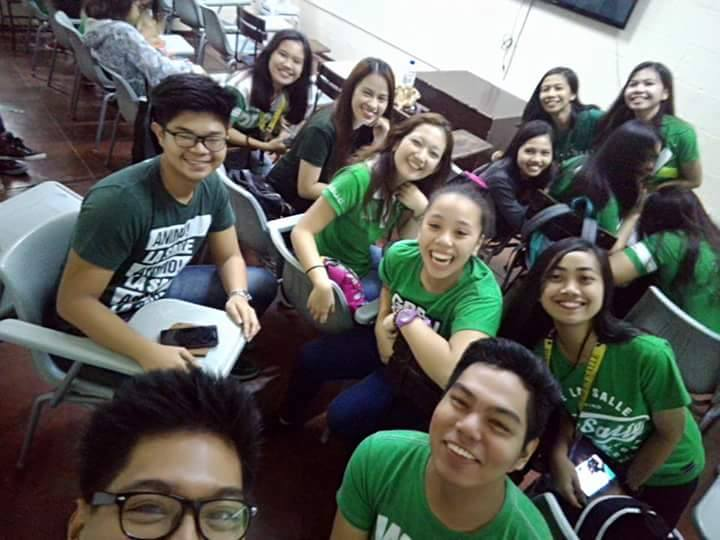
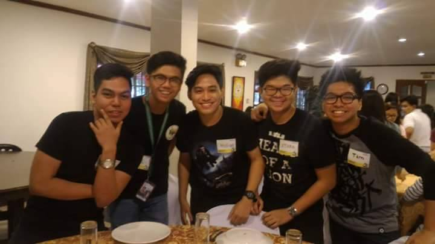

We established good friendship in our block even we have our own groups or tropas. But when we need each other, they will be there especially when one is troubled in academics. We are doing our best to pass the quota grade in our program because we do not want anymore classmate who will be dropped in the program. We are helping and supporting each other to succeed in this program.
